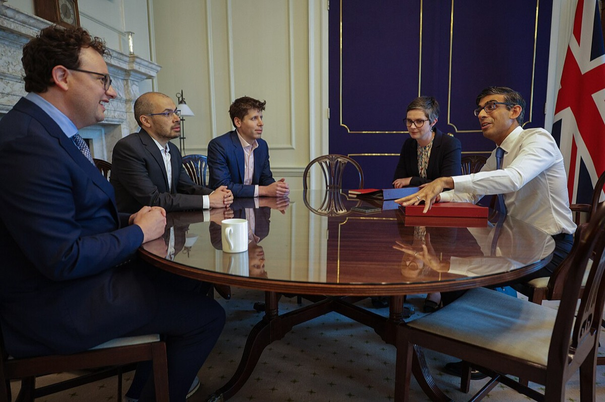
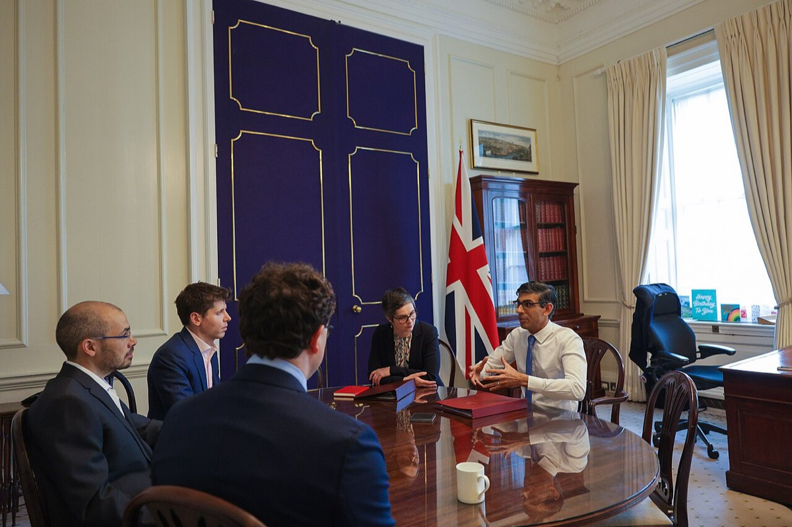
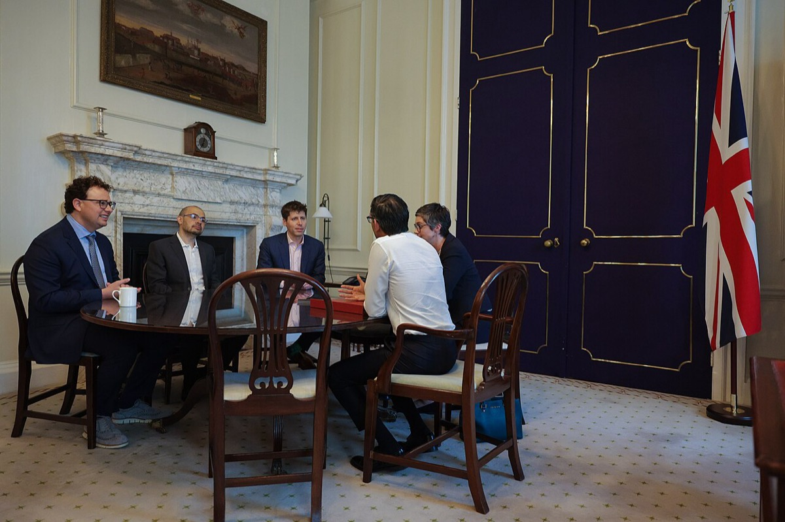
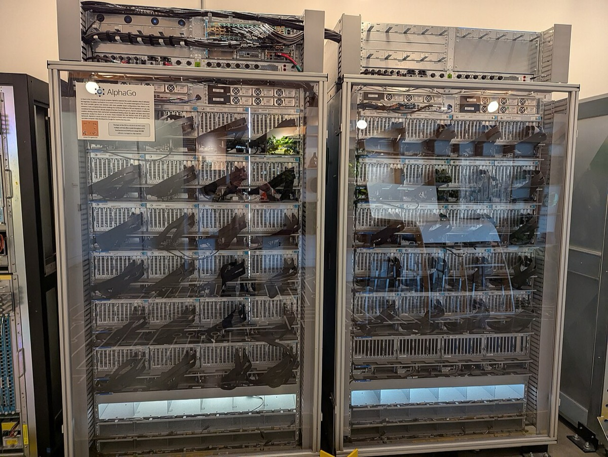
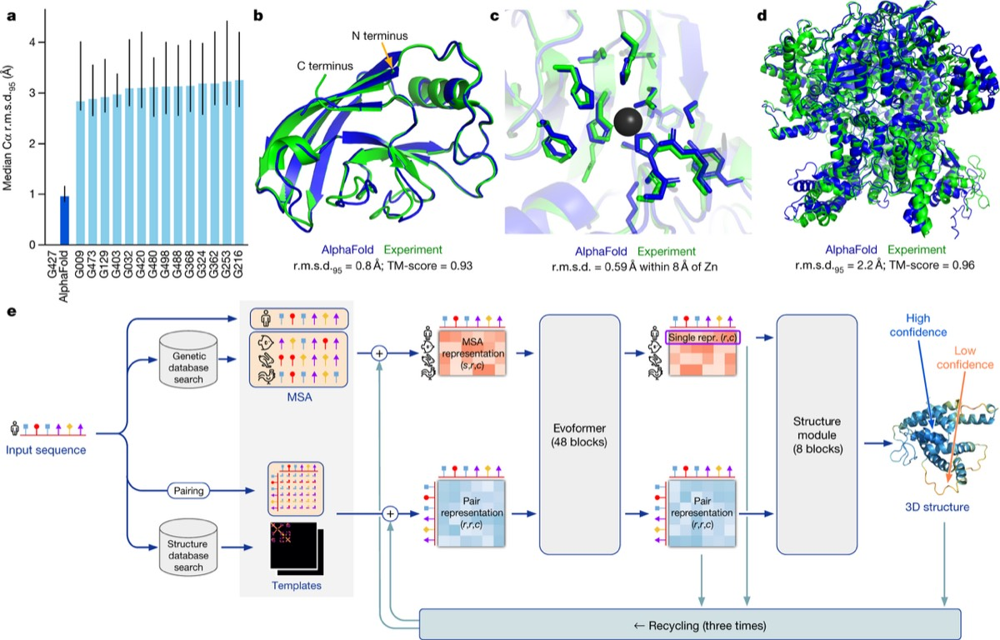
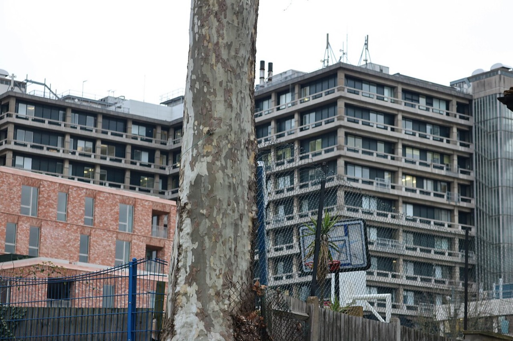
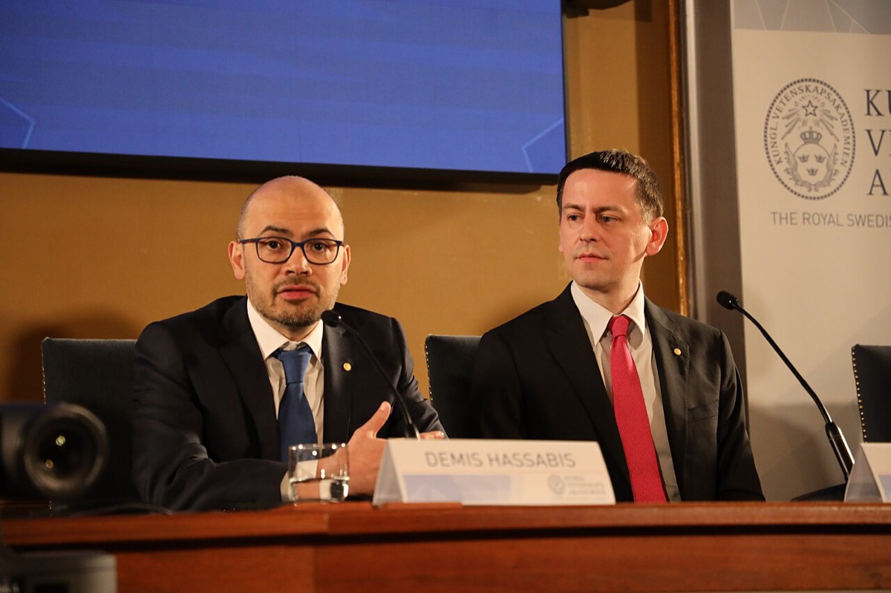

home / people / デミス・ハサビス
デミス・ハサビス — Brain統合とHealth移管
Demis Hassabis 1976.7.27 – ／Google DeepMind CEO・Isomorphic Labs CEO
Hassabis Brain統合 Streams移管
Ethics Board Isomorphic 制度的分離
判断は二つである。第一に、HassabisがBrainと分離した研究単位を自ら公式に終了させ、統合単位のCEOに残ったか。第二に、Healthの制度制約に対し、公開上の帰結がコントローラ再設計ではなくStreams移管であったか。
改稿日 2026年11月11日（初稿 2026年9月26日）。本ページはHassabis本人の意思決定・行動・公開結果の検証に限定する。AlphaFoldの方法論は 017_science 章 と 018_computing 章 に置く。年表の満年齢は生年月日1976年7月27日からの年差である。Google買収額は諸説のまま併記する。親会社資本・計算資源への「依存が増えた」かは比較時系列と内部単価が無く判定不能とする。
① 概要Overview
Brain統合発表
2023.4.20本人がCEO就任
Streams移管
2018.11.13DeepMind公式
統合後CEO露出
2023.5.24首相官邸・CEO DeepMind
ICOコントローラ
TrustDeepMindはプロセッサ
先に結論を置く。
1. HassabisはBrain統合を自ら公式化し、分離研究単位を終了させたうえでCEOに残った。 2023年4月20日のDeepMind発表はHassabisの社内メモとして公開されている。Google BrainとDeepMindがGoogle DeepMindに統合され、本人がCEOに就いた。Isomorphic Labs CEOも兼務した。退社やスピンアウトの公式経路は採っていない。親会社資本・計算資源への依存が「増えた」かは、比較時系列とGPU内部単価が無いため判定不能であり、主張1の範囲外とする45 33
2. Healthの公開帰結は、コントローラ再設計ではなくStreams移管である。 ICO undertaking（2017-07-03）はTrustをコントローラ、DeepMindをプロセッサと明記する。2018年11月13日、Hassabisらが名を連ねたDeepMind公式発表はStreamsをGoogleへ移すと記す。公開経路が移管であることは支持できる。Hassabisが社内で再設計を試みなかったか、Alphabetの指示だったかは内部記録が無く判定不能である12 13
主張
読者と判断： HassabisがBrainと分離した研究単位を自ら公式に終了させ、統合単位のCEOに残ったか。Healthについて、公開上の帰結がコントローラ再設計ではなくStreams移管であったか。いずれも本人が主語または共著者の公開結果で判定できる。
主張： Hassabisは2023年4月20日、Google BrainとDeepMindの統合を自ら発表し、Brainと分離した研究単位としてのDeepMindを公式に終了させた。本人は統合単位Google DeepMindのCEOに就き、Isomorphic Labs CEOも兼務した。退社や独立スピンアウトの公式経路は採っていない。親会社資本・計算資源への依存が「増えた」という命題は、貸付免除の1時点と公開成果の並置だけでは比較時系列にならないため、本主張には含めない。 反証条件： 統合後もDeepMindがBrainと分離した公式研究単位として存続する一次資料が出た場合。またはHassabisが統合を拒否して退社した一次資料が出た場合。 判定： 支持（本人主語の統合発表、分離単位の公式終了、CEO就任・兼務の公式事実）。資本・計算資源依存の増減と交換比率は判定不能とし、範囲外とする。主張： ICOがDeepMindをデータプロセッサと固定した（2017-07-03）。そのあとHassabisが率いるDeepMindの公開上の帰結は、コントローラ権限の再取得ではなくStreamsのGoogle移管（2018-11-13）であった。公式理由は「規模で展開」である。製品精度が移管の主因かは成績対照が無く判定不能であり、範囲外とする。 反証条件： DeepMindがコントローラとしてNHS契約を取り直した公式発表が出た場合。またはHealthがDeepMindブランドのままコントローラ再設計後に継続した公式発表が出た場合。 判定： 支持（公開経路は移管であり、コントローラ再取得の公式は無い）。Hassabisが社内で再設計を試みなかったか、Alphabetの指示だったかは判定不能とする。取締役会議事録と契約改訂の一次が無いため、主張の範囲から外す。
分解： 物理的制約は学習クラスタの電力とチップである。お金の流れはAlphabetからの内部振替と貸付免除、Isomorphicの外部調達である。利得の帰属はHassabis（兼務CEO）、Alphabet株主、患者データ管理者に分かれる。法と強制力は英国DPA／ICOと親会社の統合権限である。時間はICO認定から移管までの月数と、統合発表から公的CEOとしての露出までの間隔である。


2023年5月24日、英国首相官邸での会談である。Commons説明はDemis Hassabisを「CEO DeepMind」と記す。Brain統合発表（2023年4月20日）の約1か月後であり、主張1の「統合単位のCEOとして残った」事実を示す。写真：UK Prime Minister / Simon Walker ／CC BY 2.0；UK Prime Minister / Simon Walker ／CC BY 2.0／Wikimedia Commons
② 年表Timeline Hassabis本人の決定と、主張の検証に使う公開結果の日付を中心に並べた。日付の右は満年齢である。
該当する項目がない。
③ 主張1の検証 — 分離単位の公式終了とCEO残留Merger Announced, CEO Retained

同会談の別カットである。撮影日は統合発表の約1か月後であり、HassabisはDeepMind CEOとして公的な場に出ている。主張1が測るのは「統合を公式化したあとCEOに残ったか」であり、この露出はその公開結果である。写真：UK Prime Minister / Simon Walker ／CC BY 2.0／Wikimedia Commons
2023年4月20日のDeepMind公式「Announcing Google DeepMind」は、Hassabisの社内メモとして公開されている。文面はDeepMindとGoogle Brainの合流と、HassabisがCEOになることを記す。Google側の同日発表も同じ構図を書く。主語は本人である。統合後、Brainと分離した研究単位としてのDeepMindは公式名称上も終了した。退社やスピンアウトの公式発表は、本調査の範囲では無い45 33
同じ人物がIsomorphic Labs（2021年11月設立）のCEOを兼務する。創薬レーンは別会社名を残すが、基盤モデル側はGoogle DeepMindに統合された。兼務の結果、HassabisはAlphabet内の科学応用と製品AIの両方に公式責任を持つ構図になった10 32
Ethics Boardについて、The Information（2014）は買収条件として設置を報じた（報道）。Guardian（2017-01-26）は構成員・議題・開催の有無が非公開のままであると書いた。廃止の一次証明ではない。主張1の支持範囲には入れない。統合後の公式ページは内部のResponsibility and Safety Council（RSC）を記載する。RSCがEthics Boardの法的後継であるかは判定不能とする25 47 46
資本・計算資源の「増加」は判定不能
2019年に英国法人の関連会社貸付と利息£1,114,848,000（約1,600億円）が免除された事実はある。損失は次のとおりである。2016年£94M（約140億円）。2017年£302M（約440億円）。2018年£470M（約690億円）。2019年£477M（約660億円）。AlphaGo（2016年、4–1）とAlphaFold2（CASP14中央値GDT_TS 92.4）も公開成果としてある。ただし「親会社資本・計算資源への依存が増えた」と判定するには、依存度の比較時系列（例: 年次の親会社負担額、GPU時間の内部配分）が要る。免除の1時点と成果の並置は、増加の証明にならない。GPU時間の内部単価も非開示である。したがって資本・計算資源依存の増減は判定不能 であり、主張1の支持範囲から外す15 14 48 6 30
DeepMind Technologies Ltd. の年次損益（背景データ。増加判定には使わない）
単位は百万GBP。負は損失。2019年に貸付免除£1.115B（約1,600億円）。依存度の時系列ではない。円は各年の年平均レートで換算した


左は退役したAlphaGoのバックエンドラック。右はNature論文のCASP14成績図である。いずれも公開成果の実物・図表であり、親会社依存が「増えた」ことの直接データではない。増加判定に必要な内部配分時系列の代替にはならない。写真：Immigrant laborer ／CC0；John Jumper et al. ／CC BY 4.0／Wikimedia Commons
判定：主張1は支持 である。支持の内容は、本人主語の統合発表による分離研究単位の公式終了と、統合単位CEO（およびIsomorphic兼務）への残留までである。資本・計算資源依存の増減と交換比率は判定不能 である。増減を判定するには、親会社負担額またはGPU時間配分の年次時系列が必要である。
④ 主張2の検証 — Healthの公開帰結は移管Health Exit by Transfer

ハムステッドのRoyal Free Hospital外観である。ICO undertakingのコントローラは同Trustであり、DeepMind（Hassabisが率いる側）はプロセッサである。主張2が追うのは、この役割分担のあとで公開上どの経路が採られたかである。写真：David Howard ／CC BY-SA 2.0／Wikimedia Commons
2017年7月3日のICO undertakingは次を固定する。データコントローラはRoyal Free London NHS Foundation Trust。DeepMindはデータプロセッサ。約160万人分の部分患者記録が臨床安全性試験に使われた（ICO原文: approximately 1.6 million partial patient records）。違反認定の相手はTrustである。DeepMind公式ブログも、Trustがデータを制御しDeepMindはプロセッサに留まったと書いた。これはHassabis側が当時コントローラでなかったことの一次記録である12 39 49
2018年11月13日、DeepMindはStreamsチームをGoogleへ移すと公式発表した。理由は「Googleの規模で展開する」である。ICO認定から移管まで約16か月である。公開資料の範囲で、DeepMindがコントローラとしてNHS契約を取り直し、HealthをDeepMindブランドで存続させた公式発表は見つかっていない。移管発表の著者はDemis Hassabis、Mustafa Suleyman、Dominic Kingである。Hassabis本人が名を連ねた公開決定である13
判定：主張2は支持 である。支持の内容は、公開上の帰結がコントローラ再取得ではなくStreams移管であったことまでである。「Hassabisが再設計を選ばなかった」という内心の命題は、取締役会議事録・契約改訂案・Alphabet指示書が無いため判定不能 である。判定するには、DeepMind／Alphabetの取締役会資料、またはNHS契約でDeepMindをコントローラと記す改訂が必要である。製品精度が移管の主因かも、成績対照が無いため判定不能であり、範囲外とする。
⑤ 固定できる数字と判定不能Settled Numbers / Undecidable 主張の検証で固定できる数字と、資本・計算資源の増減が判定不能である直接因だけを置く。

2024年ノーベル化学賞の記者会見におけるDemis HassabisとJohn Jumperである。統合発表（2023年）の翌年も、HassabisはGoogle DeepMind側の公的な顔として残っている。主張1の「CEO残留」の後段の公開露出であり、資本依存の増加の証明には使わない。写真：Jennifer 8. Lee ／CC BY-SA 4.0／Wikimedia Commons
棄却しない説明
「製品失敗がStreams移管の主因である」は、成績対照が無いため棄却しない。公式理由に臨床有効性の欠如が書かれていないことだけを根拠に、製品失敗説を棄却しない。
「Ethics Boardが廃止された」は、2017年の非公開報道だけでは一次証明にならない。廃止文書が無い限り、可視性の喪失までに留める47
欠落データ（判定不能の直接因）。 親会社負担額またはGPU時間配分の年次時系列。Alphabet内部のGPU時間単価。Ethics Boardの廃止文書と取締役会議事録。Hassabis個人のAlphabet持株数。Streams移管前後の臨床成績対照。DeepMindをコントローラと記すNHS契約改訂。
⑥ 思想と方法Thought and Method 主張の検証に必要な範囲に限る。本人の公的略歴は、チェスとシミュレーションゲームで環境の規則を学習するエージェントを設計した経験を、強化学習研究所の動機に接続する。AlphaFold以降の公式言説は、一般学習を科学のボトルネックに当てる、である。Isomorphic Labsはその商業レーンであり、主張1の兼務構図の片側である3 32
⑦ 語録Quotes 主張の検証に使う、本人または本人組織の発言に限った。
⑧ 金額を日本円で読むAmounts in Yen 換算の方法
このページの金額は全て2014年以降のものであり、各年の年平均レートで円に換算した。ドルは FRED の円ドル年平均を用い、ポンドは FRED のポンドドル年平均に円ドルの年平均を掛けて算出した。2000年以降の日本の物価は2025年までに2割程度しか上がっていないため、物価による補正は省略した。給料で見た重みは、円にした金額をその年の大卒初任給の12か月分で割った値である。初任給は賞与を含まず、2015〜2023年は公表値の間を補間した値であるため、重みは目安にとどまる。
換算の出典
⑨ 誰が得をするか / 残っている問い / 出典Winners / Open Questions / Sources 誰が得をするか
Hassabis： Google DeepMind CEOとIsomorphic CEOを兼務し、統合後も公式の頂点に残る。Alphabet株主： 研究単位の統合とHealth移管により、製品と研究の指揮系統を一本化できる。貸付免除で損失を親会社側で負担できる。NHS Trust： コントローラ権限と告知義務を負う。プロセッサ側の再設計が無い限り、同じ役割分担が続く。製薬パートナー： Isomorphic経由でHassabis側の創薬レーンにアクセスする（前払い合計$82.5M、約120億円）32
残っている問い
親会社資本・計算資源への依存は増えたのか。 負担額またはGPU配分の年次時系列と内部単価が無い。Ethics Boardは廃止されたのか。 2017年時点の非公開は追えるが、廃止文書は本ページでは確認していない。Streams移管はHassabisの選好か、Alphabetの指示か。 取締役会議事録が無い。Streamsの移管前後で臨床成績はどう変わったか。 製品失敗因果の判定に必要だが非開示である。
Nobel Prize Outreach, “Demis Hassabis – Facts”（生年月日 1976-07-27 / London / AlphaFold2 / 賞分け 1/4） — https://www.nobelprize.org/prizes/chemistry/2024/hassabis/facts/
The Guardian, “Demis Hassabis: 15 facts about the DeepMind Technologies founder”（2014-01-28） — https://www.theguardian.com/technology/shortcuts/2014/jan/28/demis-hassabis-15-facts-deepmind-technologies-founder-google
Hassabis, Kumaran, Vann, Maguire, “Patients with hippocampal amnesia cannot imagine new experiences,” PNAS 104(5):1726–1731（2007） — https://www.pnas.org/doi/10.1073/pnas.0610561104
UCL News, “Amnesia research in top 10 breakthroughs of 2007”（2008-01-11） — https://www.ucl.ac.uk/news/2008/jan/amnesia-research-top-10-breakthroughs-2007
Companies House, DEEPMIND TECHNOLOGIES LIMITED（company 07386350） — https://find-and-update.company-information.service.gov.uk/company/07386350
Google / DeepMind, AlphaGo vs Lee Sedol 試合報告（2016-03、4–1） — https://blog.google/innovation-and-ai/products/alphagos-ultimate-challenge/
DeepMind, “AlphaFold: a solution to a 50-year-old grand challenge in biology”（CASP14、公式表記「92.4 GDT」） — https://deepmind.google/blog/alphafold-a-solution-to-a-50-year-old-grand-challenge-in-biology/
Jumper et al., “Highly accurate protein structure prediction with AlphaFold,” Nature（2021） — https://www.nature.com/articles/s41586-021-03819-2
Nobel Prize, Press release: The Nobel Prize in Chemistry 2024（2024-10-09） — https://www.nobelprize.org/prizes/chemistry/2024/press-release/
Isomorphic Labs, “Isomorphic Labs announces $600m external investment round”（2025-03-31） — https://www.isomorphiclabs.com/articles/isomorphic-labs-announces-600m-external-investment-round
GameDeveloper, “Elixir Studios To Close Doors”（2005） — https://www.gamedeveloper.com/game-platforms/elixir-studios-to-close-doors
BAILII / ICO, Royal Free London NHS Foundation Trust Undertaking [2017] UKICO 2017-66（2017-07-03、約160万件） — https://www.bailii.org/uk/cases/UKICO/2017/2017-66.html
DeepMind, “Scaling Streams with Google”（2018-11-13） — https://deepmind.google/blog/scaling-streams-with-google/
DeepMind Technologies Limited, Full accounts year ended 31 Dec 2017（損失 £302M；比較年 2016 £94M） — https://gwern.net/doc/reinforcement-learning/deepmind/2017-deepmind-fullaccounts.pdf
DeepMind Technologies Limited, Full accounts year ended 31 Dec 2019（損失 £477M、貸付免除 £1.115B） — https://gwern.net/doc/reinforcement-learning/deepmind/2019-deepmind-fullaccounts.pdf
Wikipedia, “Demis Hassabis”（経歴の二次整理。一次と突合して使用） — https://en.wikipedia.org/wiki/Demis_Hassabis
Queen Elizabeth's School, Barnet, “Entrepreneur and academic: Demis remains at technological forefront” — https://www.qebarnet.co.uk/entrepreneur_and_academic__demis_remains_at_technological_forefront/
Wikipedia, “Theme Park (video game)” — https://en.wikipedia.org/wiki/Theme_Park_(video_game)
The Independent, “Game over for blood and gore”（1999） — https://www.independent.co.uk/news/game-over-for-blood-and-gore-1099853.html
IGN, “Elixir Shuts Down”（2005-04-28） — https://www.ign.com/articles/2005/04/28/elixir-shuts-down
GamesIndustry.biz, “Elixir Studios to close following cancellation of key project”（2005-04-28） — https://www.gamesindustry.biz/elixir-studios-to-close-following-cancellation-of-key-project
TechCrunch, DeepMind 初期投資家の報道整理（2014-01-26） — https://techcrunch.com/2014/01/26/google-deepmind/
The Guardian, “Google buys UK artificial intelligence startup Deepmind for £400m”（2014-01-27） — https://www.theguardian.com/technology/2014/jan/27/google-acquires-uk-artificial-intelligence-startup-deepmind
BBC News, “Google buys UK artificial intelligence start-up DeepMind”（2014-01-27） — https://www.bbc.com/news/technology-25908379
The Information (archive), “Google Beat Facebook for DeepMind, Creates Ethics Board”（2014-01-26） — https://web.archive.org/web/20140131121719/https:/www.theinformation.com/Google-beat-Facebook-For-DeepMind-Creates-Ethics-Board
Forbes / Economist 報道整理, DeepMind Ethics Board と Ethics and Safety Review Agreement（2019） — https://www.forbes.com/sites/samshead/2019/03/14/deepminds-mysterious-ethics-board-will-reportedly-control-agi-if-its-ever-created/
Mnih et al., “Human-level control through deep reinforcement learning,” Nature（2015-02） — https://www.nature.com/articles/nature14236
DeepMind media, Lee Sedol vs AlphaGo Game 2 English commentary PDF — https://deepmind-media.storage.googleapis.com/alphago/pdf-files/english/ls-vs-ag2/LS%20vs%20AG%20-%20G2%20-%20English.pdf
Silver et al., AlphaGo Zero / AlphaZero 系列（Nature 2017、Science 2018） — https://www.nature.com/articles/nature24270
Jumper et al., “Applying and improving AlphaFold at CASP14,” Proteins（中央値を指標名 GDT_TS 92.4 として報告） — https://onlinelibrary.wiley.com/doi/10.1002/prot.26257
Abramson et al. / DeepMind, AlphaFold 3（Nature 2024-05） — https://www.nature.com/articles/s41586-024-07487-w
Isomorphic Labs, “Isomorphic Labs kicks off 2024 with two pharmaceutical collaborations”（2024-01-07） — https://www.isomorphiclabs.com/articles/isomorphic-labs-kicks-off-2024-with-two-pharmaceutical-collaborations
Google, “Google DeepMind: Bringing together two world-class AI teams”（2023-04-20） — https://blog.google/innovation-and-ai/technology/ai/april-ai-update/
Bloomberg, “Google Waives $1.5 Billion DeepMind Loan…”（2019年 £1.1B 免除の報道） — https://www.bloomberg.com/news/articles/2020-12-17/deepmind-says-2019-revenue-jumped-158-on-ai-research-work
DeepMind Technologies Limited, Full accounts year ended 31 Dec 2023（利益 £113M、売上 £1,527M） — https://gwern.net/doc/reinforcement-learning/deepmind/2023-deepmind-fullaccounts.pdf
The London Gazette, New Year Honours 2018 — Dr Demis HASSABIS CBE（2017-12-30） — https://www.thegazette.co.uk/notice/2937937
The Royal Society, “Sir Demis Hassabis CBE FREng FRS”（選出 2018） — https://royalsociety.org/people/demis-hassabis-13817/
The London Gazette, Knights Bachelor — Demis HASSABIS（2024-04-19） — https://www.thegazette.co.uk/notice/4603787
DeepMind, “The Information Commissioner, the Royal Free, and what we’ve learned” — https://deepmind.google/blog/the-information-commissioner-the-royal-free-and-what-weve-learned/
BBC News, “Google accused of 'trust demolition' over health app”（2018-11） — https://www.bbc.co.uk/news/technology-46206677
The New York Times, “DeepMind co-founder leaves Google after a rocky tenure”（2022-01-20） — https://www.nytimes.com/2022/01/20/business/google-deepmind-mustafa-suleyman.html
Microsoft Blog, “Mustafa Suleyman … joins Microsoft to lead Copilot”（2024-03-19） — https://blogs.microsoft.com/blog/2024/03/19/mustafa-suleyman-deepmind-and-inflection-co-founder-joins-microsoft-to-lead-copilot/
Silver et al., “Mastering the game of Go with deep neural networks and tree search,” Nature（2016-01） — https://www.nature.com/articles/nature16961
Reuters, “Google to buy artificial intelligence company DeepMind”（2014-01-26、$400M 報道） — https://web.archive.org/web/20160311002911/http:/www.reuters.com/article/google-deepmind-idUSL2N0L102A20140127
DeepMind, “Announcing Google DeepMind”（2023-04-20） — https://deepmind.google/blog/announcing-google-deepmind/
Google DeepMind, “Responsibility & Safety”（内部RSC／AGI Safety Council） — https://deepmind.google/responsibility-and-safety/
The Guardian, “Whatever happened to the DeepMind AI ethics board Google promised?”（2017-01-26） — https://www.theguardian.com/technology/2017/jan/26/google-deepmind-ai-ethics-board
Companies House, DEEPMIND TECHNOLOGIES LIMITED Filing history（company 07386350、決算一次の入口） — https://find-and-update.company-information.service.gov.uk/company/07386350/filing-history
ICO, Undertaking: Royal Free London NHS Foundation Trust（2017-07-03、PDF一次、approximately 1.6 million partial patient records） — https://ico.org.uk/media/action-weve-taken/undertakings/2014352/royal-free-undertaking-03072017.pdf
Wikimedia Commons / UK Prime Minister, “The Prime Minister meets with AI developers”（2023-05-24、説明文が Demis Hassabis, CEO DeepMind と記す） — https://commons.wikimedia.org/wiki/File:The_Prime_Minister_meets_with_AI_developers.jpg
FRED, Japanese Yen to U.S. Dollar Spot Exchange Rate（AEXJPUS、年平均） — https://fred.stlouisfed.org/series/AEXJPUS
FRED, U.S. Dollars to U.K. Pound Sterling Spot Exchange Rate（AEXUSUK、年平均） — https://fred.stlouisfed.org/series/AEXUSUK
厚生労働省『平成27年版 労働経済の分析』主要労働統計表 第11表 新規学卒者の初任給 — https://www.mhlw.go.jp/wp/hakusyo/roudou/15/dl/15-1-10.pdf
厚生労働省 令和7年賃金構造基本統計調査 第10表 — https://www.mhlw.go.jp/toukei/itiran/roudou/chingin/kouzou/z2025/dl/10.pdf